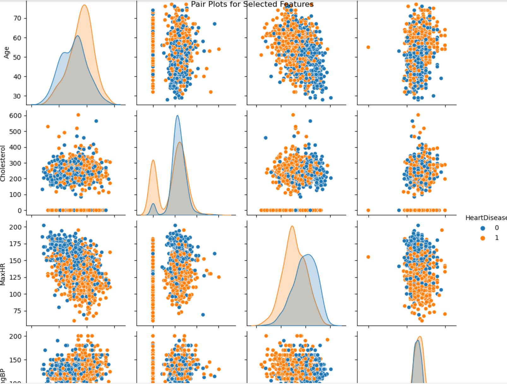

Heart Disease
Prediction
https://www.kaggle.com/datasets/fedesoriano/heart-failure-prediction
Cardiovascular
diseases (CVDs) are the number 1 cause of death globally, taking an estimated
17.9 million lives each year, which accounts for 31% of all deaths worldwide.
Four out of 5CVD deaths are due to heart attacks and strokes, and one-third of
these deaths occur prematurely in people under 70 years of age. Heart failure
is a common event caused by CVDs and this dataset contains 11 features that can
be used to predict a possible heart disease.
People
with cardiovascular disease or who are at high cardiovascular risk (due to the
presence of one or more risk factors such as hypertension, diabetes,
hyperlipidemia or already established disease) need early detection and
management wherein a machine learning model can be of great help.
Heart Disease
Prediction using Machine Learning
"Our
project is a comprehensive machine learning endeavor focused on predicting
heart disease. We embark on this journey by meticulously preparing our data,
uncovering insights through thoughtful exploration and compelling
visualization. We craft a neural network model designed to unveil patterns in
the data. Our dataset is cleaned, and categorical variables are artfully
transformed. We divide our data into training and testing sets, ensuring a
well-balanced model. As we scale the data, our neural network takes shape,
learning from the training data. In the end, we evaluate our model using a
confusion matrix, showcasing its predictive progress. We also illuminate the
path for future predictions, demonstrating the importance of logistical
regression. The result? A powerful tool for heart disease prediction, ready to
make an impact. ”
Features
Heart disease prediction using
Importing
Data visualization
Preprocessing
Models
Logistic regression
Standard scalar
Final output
·
Data
Preprocessing and Exploration:
Data is loaded and explored.
Missing values are checked, and summary
statistics are calculated.
· Correlation Analysis:
Correlations between features are
visualized using a heatmap.
· Data Visualization:
Scatter plots and pair plots are used
to examine relationships between features and heart disease.

A violin plot shows cholesterol distributions based on
heart disease status.
· Model Building and Training:
A neural network model is constructed
and trained.
Model Evaluation and Deployment:
The trained
model and scaler are saved for future predictions.